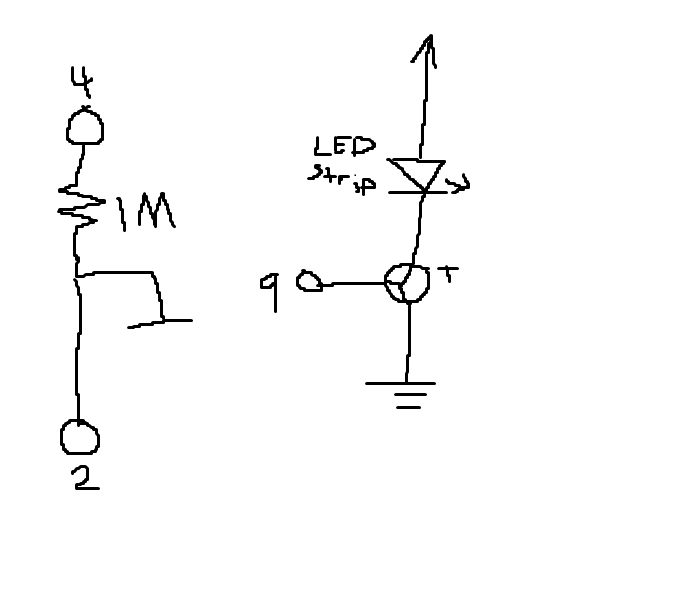
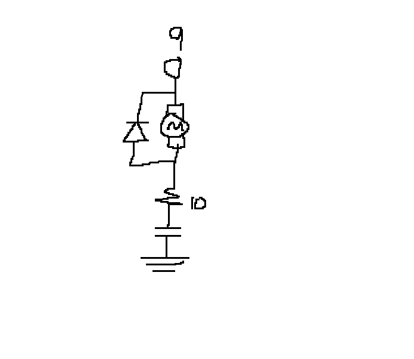
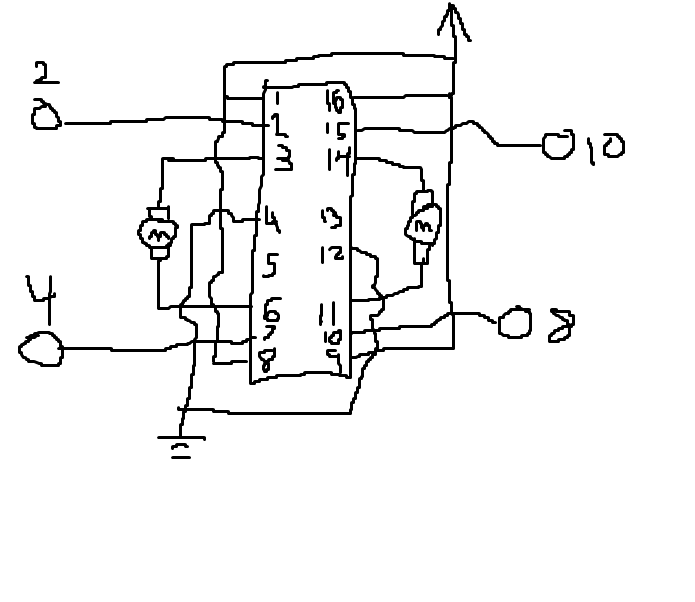

Sam Roberts' Assignment 5: High Voltage & Transistors!

This is the schematic for the circuit. The schematic has two distinct parts. The capacitive sensor (left) which
serves as the input for the circuit, and the high voltage transistor (right) resticts or allows current to flow through the LED strip.
The capacitive sensor ustilizes a 1 M ohm resistor. The resistance value determines how sensitive the sensor is,
with a high value such as 1 M lowering the sensitivity to requiring touch. If a lower value was used the capacitive
sensor would activate as the hand got close to the half a capacitor. The transistor is wired with a 12 volt power supply
and an LED strip beofre it. Pin 9 is used as the control for the transistor. Then the entire circuit is then grounded. When
pin 9 is supplyng current the transistor allows curretn to flow through the LED strip, turning it on. The led strip is made up
of roughly 1000 segements (5m total length / 0.05m segemnt length). Each segment has 3 white LEDs and one 180 ohm resistor. Since
all segements are in series the voltage in each segment is equal to 12 V. White LEDs have a V drop of 3.3, to total drop is 9.9,
meaning the current is (2.1 / 180) which equals about 11.7 mA in each segment. Since there are 1000 segements that means the total
current into the transistor is 11.7 A
Below is an image of the circuit.

The circuit is divided up into two main parts, the capacitive sensor, which serves as the input to control
the high voltage transistor which allows or blocks current to flow through the LED strip. The capacitive sensor uses pin 4 as the sendPin and
pin 2 as the recievePin. There is a 1 Megaohm resistor inbetween the two pins. On the pin 2 side of the resistor there
is a penny that is aligator clipped to a wire which acts as part of the capacitor. The LED strip is wired from power from the
outlet, through the transistor, and then grounded on the blue bar with the rest of the circuit. Pin 9 is used as direct input
to control the transistor.
#include // Include capacitive sensor library
CapacitiveSensor cs_4_2 = CapacitiveSensor(4,2); //initalize a cpacitive sensor with pins 4 and 2
int lampState = 0; // 0 is off, 1 is on
int timeMax = 0; // Maximum time it takes for capacitor to discharge
int timeMin = 1000; // Minimum time
long prevTotal = 0; // Previous capacitive sensor reading
void setup() {
// put your setup code here, to run once:
pinMode(9, OUTPUT); // Set nine to output, this pin will be used to control the transistor
analogWrite(9, 0); // Set the pin to no output
cs_4_2.set_CS_AutocaL_Millis(0xFFFFFFFF); // set the capacitor
Serial.begin(9600); // Begin the serial monitor
Serial.println("Start"); // Signify start of calibration
while (millis() < 5000) { // For the first 5 seconds after bootup
long total1 = cs_4_2.capacitiveSensor(30); // Read time to discharge capacitor
if (total1 > timeMax) { // If recorded value is greater than the highest value recorded so far
timeMax = total1; // Set recorded value to be the maximum
}
if (total1 < timeMin) { // If recorded value is less than the lowest value recorded so far
timeMin = total1; // Set recorded value to be the minimum
}
}
Serial.println("End"); // Signify end
}
void loop() {
// put your main code here, to run repeatedly:
long total1 = cs_4_2.capacitiveSensor(30); // Get capacitive sensor reading
total1 = map(total1, timeMin, timeMax, 0, 100); // Map the capacitor value to between 0 and 10, utilizing the min and max from calibration
total1 = constrain(total1, 0, 100); // Constrain value to between 0 and 10
if (total1 > 50 && prevTotal <= 50) { // If capaciitor is in top 50% of reading it is most likely being touched so change lamp state
if (lampState == 0) { // If lamp is off
lampState = 1; // set state to on
analogWrite(9, 255); // Turn on LEDs
} else { // Lamp is on
lampState = 0; // set state to off
analogWrite(9, 0); // turn off LEDs
}
}
delay(10); // Time out being able to change state for 2 seconds to prevent flickering without reducing responsivness
prevTotal = total1; // Set the total used this iteration as the last total for the next iteration
Serial.println(total1); // print reading output to serial monitor
}
 Final Circuit in action!
Final Circuit in action!
1. The max current between the drain (2) and source (3) pins is 37.2 A at 25+ degrees C and
29.8 at 100+ degrees C.

Data Sheets:
LED: chrome-extension://efaidnbmnnnibpcajpcglclefindmkaj/https://www.farnell.com/datasheets/1498852.pdf
Motor: chrome-extension://efaidnbmnnnibpcajpcglclefindmkaj/https://components101.com/sites/default/files/component_datasheet/Toy%20DC%20motor%20Datasheet.pdf
Capacitor: chrome-extension://efaidnbmnnnibpcajpcglclefindmkaj/https://components101.com/sites/default/files/component_datasheet/Ceramic%20Capacitor%20Datasheet.pdf

3. // Motors same way
pinMode(2, HIGH)
pinMode(4, LOW)
pinMode(10, HIGH)
pinmode(8, LOW)
// Same way other direction
pinMode(2, LOW)
pinMode(4, HIGH)
pinMode(10, LOW)
pinmode(8, HIGH)
// Opposite directions
pinMode(2, HIGH)
pinMode(4, LOW)
pinMode(10, LOW)
pinmode(8, HIGH)